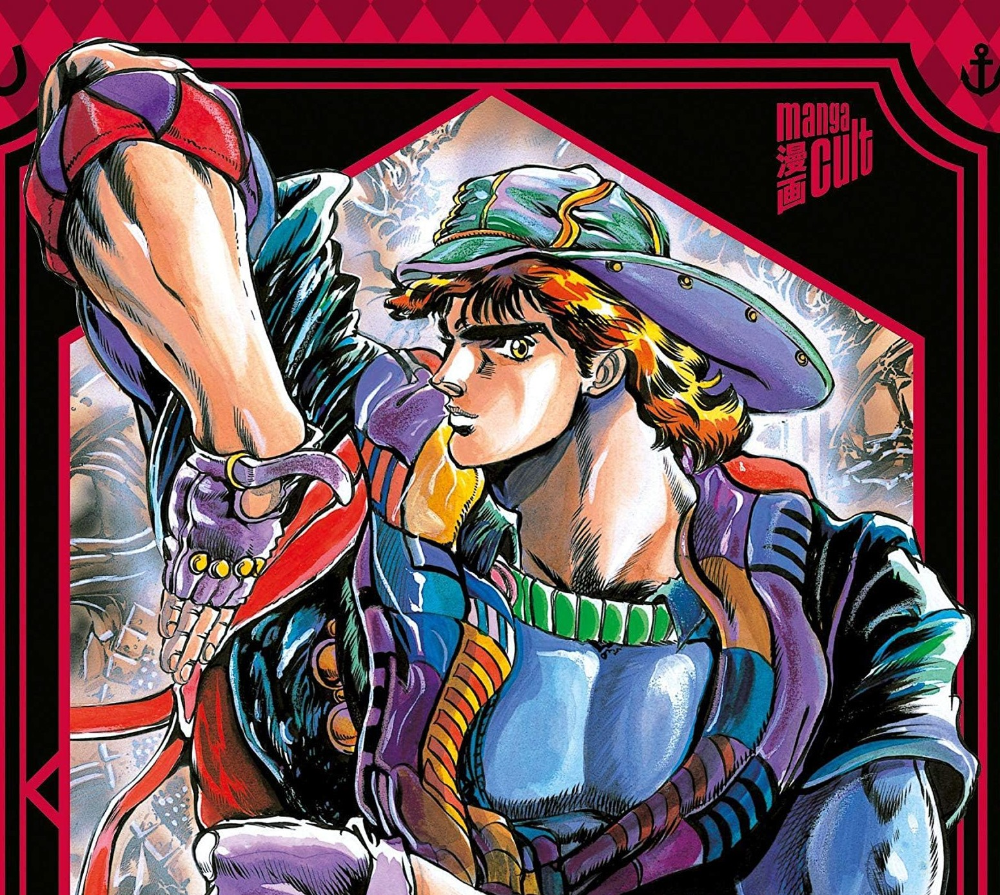
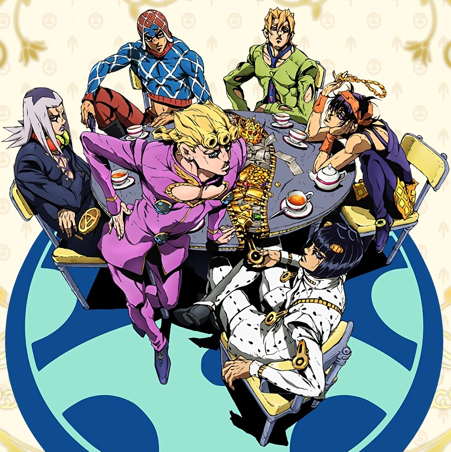
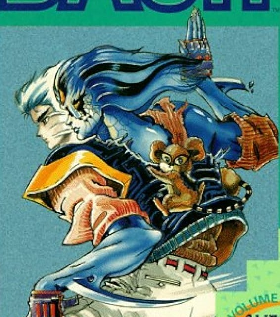
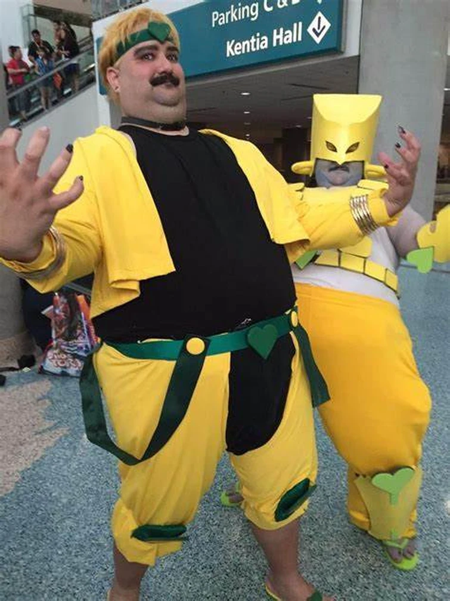

JoJo's Bizarre Adventure - Manga
Discussions sur toutes les parties du manga, analyses de chapitres, théories sur les Stands et les personnages. De Phantom Blood à The JOJOLands.

Discussions sur toutes les parties du manga, analyses de chapitres, théories sur les Stands et les personnages. De Phantom Blood à The JOJOLands.

Adaptations animées, comparaisons manga/anime, OST iconiques, moments marquants. De David Production aux OVA des années 90.

Baoh, Rohan Kishibe, Gorgeous Irene, Thus Spoke Kishibe Rohan et tous les one-shots. L'univers d'Araki au-delà de JoJo.
Biographie, interviews, expositions, évolution artistique. Discussions sur le style unique et l'influence d'Araki dans le monde du manga.

Fan art, cosplay, memes, événements. Partagez vos créations et votre passion pour l'univers d'Araki avec la communauté.